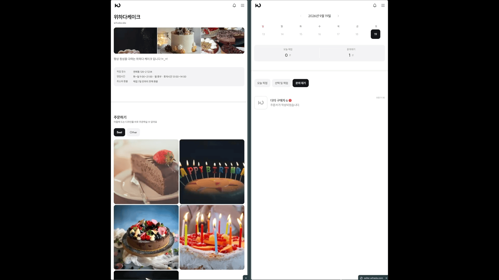
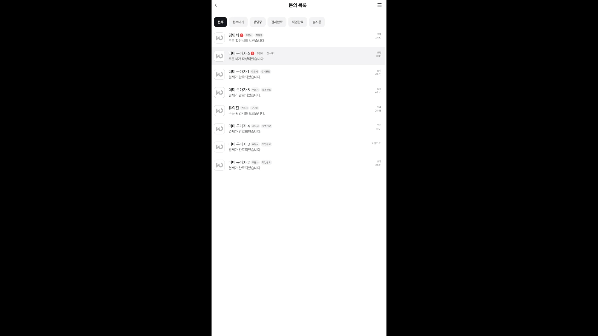

02
Problem & Product Flow
Problem
SNS 소셜 셀러는 주문 접수, 디자인 상담과 결제 안내를 DM과 외부 주문서로 처리합니다. 정보와 상담 기록이 여러 채널에 분산되어 판매자는 변경 이력과 처리 상태를 수기로 추적해야 하고, 구매자는 최종 결제 조건을 명확하게 확인하기 어렵습니다.
Direction
위하다는 구매자와 스토어 사이에 지속되는 상담방을 중심으로 주문 과정을 통합했습니다. 정해진 상품을 즉시 결제하는 대신 상담 결과로 가격과 픽업 조건을 확정한 뒤 주문확인서를 기준으로 결제합니다.
Product Flow
01주문서 제출
02판매자 상담
03주문확인서 발행
04구매자 결제
05픽업 완료 또는 환불

